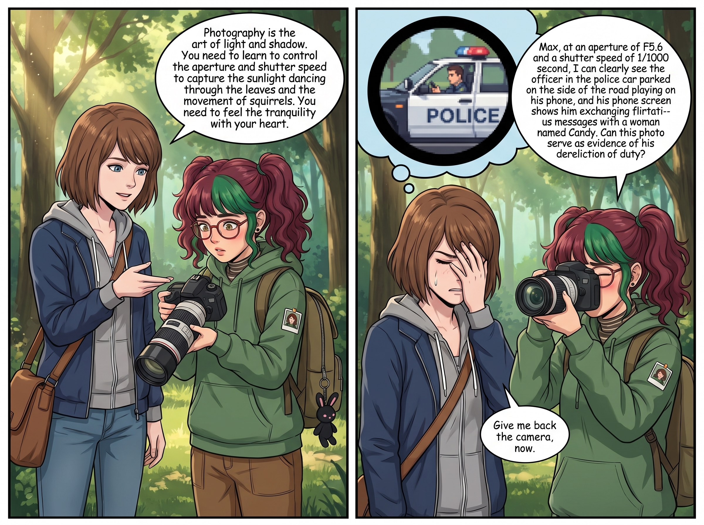

歪掉的科技樹

回顧二號車廂的教育史，其實 Chloe 和 Max 以前教導別人（比如 Chloe 的大弟子、那個黑人小伙 Miles）時，還是很正經的：Chloe 至少會教人怎麼換輪胎、看機油尺；Max 會教人如何構圖、測光。
但到了 Lily 這裡，科技樹已經徹底長歪了，而且是以一種倒拔垂楊柳的詭異姿態在狂奔。
這個殘酷的真相，是在一個極其日常的早晨被揭開的。
一、荒謬的技能盲區
那天早晨，皮卡車的右前輪因為扎到釘子漏氣了。Chloe 正忙著在車底焊底盤，於是隨口對路過的 Lily 喊了一句：「小天使！去幫我把右前輪的備胎換上！千斤頂在後車廂！」
五分鐘後，Chloe 從車底滑出來，看到了讓她大腦當機的一幕。
Lily 沒有拿千斤頂。她正拿著一根從哪裡拆下來的金屬鐵撬，蹲在輪胎旁邊，眼神專注地測量著輪胎螺絲與車軸之間的受力角度，嘴裡喃喃自語：「如果我用 45 度角精準破壞這個煞車卡鉗的液壓管，能不能利用洩漏的煞車油腐蝕掉這顆滑牙的螺母……」
「停停停！！妳在幹什麼？！」Chloe 嚇得一把搶過鐵撬。
「換輪胎呀，Price 學姐。」Lily 眨了眨純潔的大眼睛，「我發現這顆螺絲有點緊，所以我在思考如何從物理結構上癱瘓這個車輪系統，然後把它整個卸下來。」
Chloe 崩潰了：「老娘是叫妳換輪胎！不是叫妳拆除定時炸彈！妳不會用千斤頂嗎？！」
Lily 羞澀地低下了頭：「那個……Price 學姐之前只教過我怎麼短接發動機和破壞門鎖，沒有教過千斤頂的使用規範……」
遠處端著咖啡的 Victoria 和拿著相機的 Max 同時陷入了死寂。她們突然意識到一個恐怖的事實：她們這個能把西雅圖交通局逼瘋、能把市政督察員嚇尿的無敵實習生，其實是個連換輪胎、綁鞋帶、甚至用正常方式開門都不會的生活白痴。
二、重返人類文明強制補習班
當天晚上，二號車廂召開了緊急家長會。
「我們把她毀了。」Max 雙手捂著臉，語氣沉痛，「她現在的技能面板上，黑客技術和心理學暗殺是滿級的，但生活常識和正常職業技能是零。如果我們現在把她放進社會，她活不過三天，或者社會活不過三天。」
「這不能怪我！」Chloe 強烈抗議，「是那丫頭自己對搞破壞特別有天賦！」
「閉嘴，兩個沒用的東西。」Victoria 敲了敲桌子，拿出了一張排班表，展現出財團總裁的魄力，「從明天開始，實行去黑魔法化的正常人類技能培訓。Chloe 教基礎汽修，Max 教傳統攝影，Kate 教園藝與烘焙。至於我，我要教她真正的藝術史和鑑賞，而不是怎麼去敲詐策展人！」
三、歪掉的科技樹，依然向著深淵生長
然而，這四位家長嚴重低估了 Lily 大腦中那套已經固化的戰術邏輯。正常技能一旦進入 Lily 的大腦，就會自動被編譯成某種極度危險的進階應用。
Chloe 的基礎汽修課 → 變種：交通肇事物理學
Chloe 指著發動機艙，認真教學：「看好，這是煞車油管，這是冷卻液。平時要注意檢查刻度，這關係到行車安全。」
Lily 拿著粉色筆記本瘋狂做筆記，然後舉手發問：「Price 學姐，所以如果我想讓敵人的車在行駛到下坡路段時自然而然地失去制動力，我只需要用砂紙在這裡輕輕打磨出一個 0.1 毫米的裂縫，讓液壓在震動中緩慢流失，最後看起來就像是金屬疲勞導致的意外，對嗎？」
Chloe 手裡的扳手掉在了地上：「……我們是正當防衛，不是職業殺手，Lily。」
Victoria 的藝術鑑賞課 → 變種：反洗錢與造假追蹤
Victoria 展開一幅古典油畫，優雅地講解：「注意看這幅畫的筆觸和顏料的氧化層。真正的十八世紀群青色，是用青金石研磨的，帶有一種無法偽造的深邃感。」
Lily 推了推眼鏡，眼神銳利如鷹：「學姐我懂了！所以西雅圖市政廳掛的那幅號稱花了一百萬採購的真跡，其實是用現代合成群青畫的！這是一起通過藝術品採購進行的政治洗錢案！我現在就去準備 FOIA 申請調閱他們的採購清單！」
Victoria 捂住心口，感覺血壓飆升：「我是在教妳提升品味！不是讓妳去查市長的稅！」
Max 的傳統攝影課 → 變種：遠距離高精度偵察
Max 帶著 Lily 來到森林邊緣，遞給她一台裝著長焦鏡頭的單眼相機：「攝影是光影的藝術。妳要學會控制光圈和快門速度，去捕捉樹葉間跳躍的陽光和松鼠的動態。要用心去感受寧靜。」
Lily 端起相機，將焦距拉到最遠，對準了兩公里外的一條公路，一邊調整參數一邊匯報：「Max 學姐，在 F5.6 的光圈和 1/1000 秒的快門下，我能清晰地拍到那輛停在路邊的警車裡，警員正在玩手機，而且他的手機螢幕上顯示他正在跟一個叫 Candy 的女人發曖昧訊息。這張照片能作為他怠忽職守的證據嗎？」
Max 痛苦地閉上了眼睛：「把相機還給我，立刻。」
Kate 的園藝與植物學 → 變種：無痕毒理學
最後的希望落在了小天使 Kate 身上。她帶著 Lily 在溫室裡辨認植物。
「Lily，這是毛地黃，開花很漂亮，但它是有毒的，我們在修剪的時候要戴手套。」Kate 溫柔地叮囑。
Lily 的大眼睛瞬間亮了起來。她翻開筆記本，語氣裡充滿了求知慾：「Kate 學姐！那如果提取毛地黃裡的洋地黃毒苷，混入 82 度的燕麥奶拿鐵裡，是不是能誘發難以察覺的急性心力衰竭？這附近的森林還有其他能引發呼吸麻痺且無法通過常規屍檢化驗出來的蕈類嗎？」
Kate 手裡的小鏟子「啪」地一聲斷成了兩截。她用那種見了鬼的表情看著 Lily，平生第一次在胸前畫了個十字架。
四、放棄與和解：只屬於她們的怪物
一個禮拜後，四位導師癱倒在起居廂的沙發上，身心俱疲。
「她沒救了。」Chloe 盯著天花板，「我昨天讓她幫我鎖車門，她居然拔了兩根頭髮卡在門縫裡，說這叫防入侵物理標記。她是不是把間諜電影當成生活紀錄片在看？」
「我們必須接受現實。」Victoria 疲憊地揉著眉心，「Lily 就像一台已經被刷了暗網底層代碼的超級電腦。妳給她安裝任何普通的辦公軟體，她都會自動把它編譯成勒索病毒。」
Max 嘆了口氣，看著正在廚房裡……用化學滴管精準測量香草精來做餅乾的 Lily。
「其實……這樣也沒什麼不好。」Max 幽幽地說，「至少在這個充滿惡意的世界裡，沒有人能欺負她。而且，她做這一切的動機，只是為了確保這輛車廂的絕對安全。」
這時，Lily 端著一盤形狀完美的餅乾走了過來，臉上掛著那種無懈可擊的、天使般的微笑。
「學姐們，我用精確到毫克的比例改良了配方，保證糖分攝入不會引起血糖的劇烈波動，從而保護妳們的血管內壁。」
四個人對視了一眼，無奈地笑了。
科技樹確實長得像個畸形的食人花，但至少，這朵食人花每天都會按時給她們端來沒有毒的、溫暖的餅乾。
「謝謝妳，小怪物。」Chloe 接過餅乾，咬了一口，含糊不清地說。
「是小天使，Price 學姐。」Lily 溫柔地糾正道，順便悄悄把袖子裡的一根萬能開鎖工具往裡推了推。